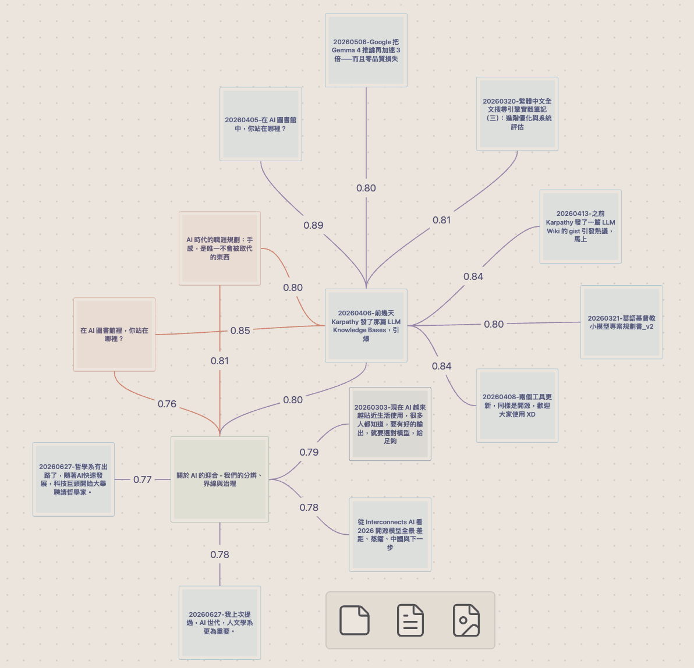
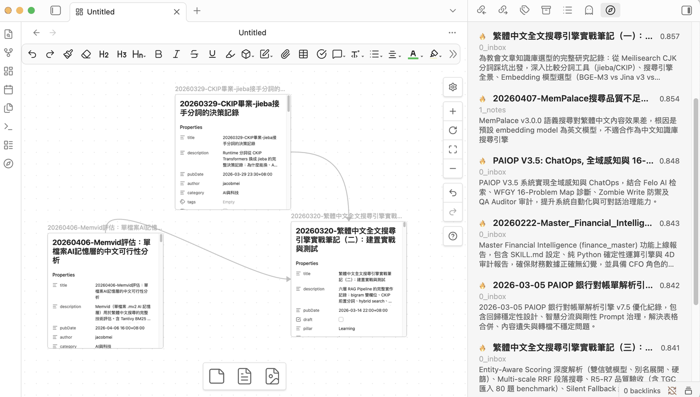
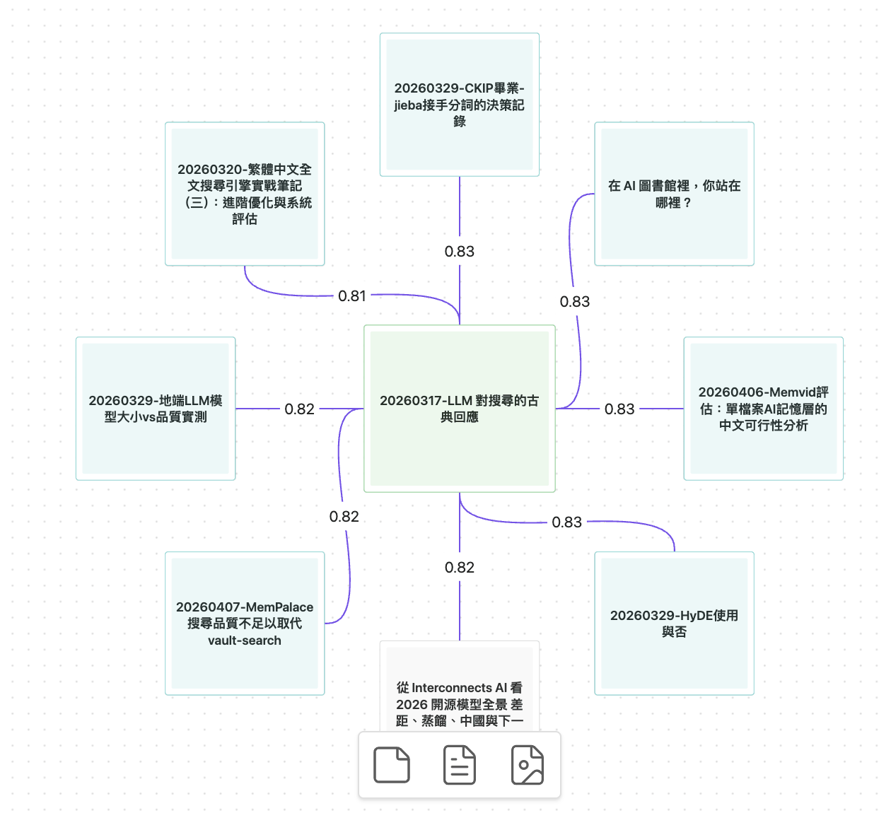
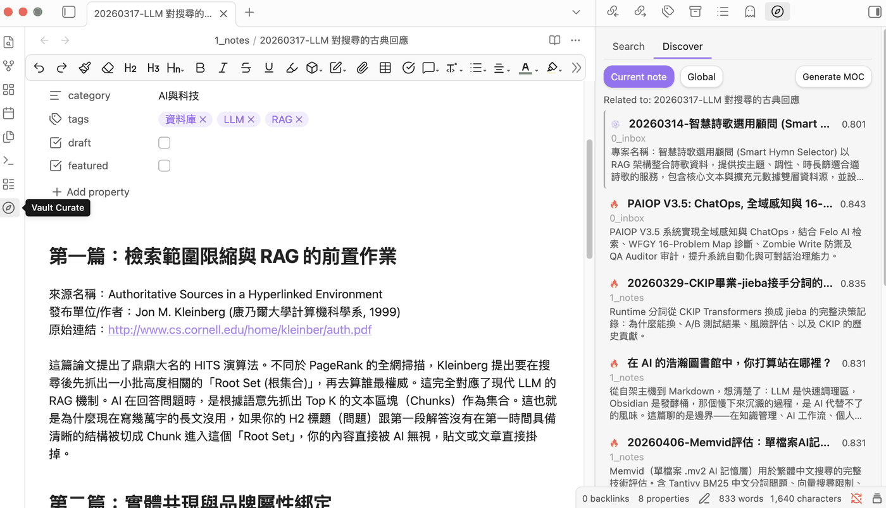

Vault Curate
A local-first second brain for Obsidian
Find, connect, and rediscover your notes. Search by meaning,
see the links you never drew by hand, and bring back the good notes you forgot
you had.
Everything runs on your own computer, with no API keys, no accounts
and no tracking.
Obsidian plugin, desktop and mobile · Free and open source (MIT license) · Works without an internet connection · Strong on Chinese and other CJK notes
Get it
Checking the latest release…
Inside Obsidian: Settings → Community plugins → Browse, search Vault Curate, then Install and Enable. Full steps, including BRAT and manual install, are in Installing below.
What is this?
Finding a note is only the first step. The harder parts come after: seeing how your notes relate to each other, including the connections you never linked by hand, and not letting good notes quietly sink out of sight. Obsidian's built-in search is literal — look for "prayer" and you miss "devotional" — its graph shows only the links you drew yourself, and older notes gradually fall off your radar.
Vault Curate closes that loop inside your vault: find a note by meaning, see what it relates to, and rediscover what you had forgotten. It suggests; you decide. There is no chatbot answering on your behalf and no background process rewriting your notes.

What it does
- Search by meaning, not just characters: exact keywords, meaning, and misspelled titles are searched at the same time and merged into one ranking
- Shows the links you never drew: an editable Obsidian Canvas of the notes closest to the one you're reading, with unlinked pairs marked in purple
- One click turns a suggestion into a real link: tick the pairs you agree with and they become proper wikilinks in both notes
- Chains between two notes: pick any two and get the stepping-stone notes between them — or an honest "these aren't connected", with the actual numbers
- Forgotten notes come back: notes you haven't touched in a while are surfaced when they relate to what you're working on now
- Your answers stick: reject a suggestion and that pair never comes back, surviving renames, deletions and a full re-index. Everything you dismissed stays reviewable in settings
- Runs on your own machine: the built-in model works on-device, so there are no API keys to buy and no usage tracking
- Strong on Chinese and other CJK notes: the built-in model is tuned for Chinese, where generic multilingual models tend to struggle. Point it at Ollama or an OpenAI-compatible server for other languages
- One index, every device: your desktop builds it, your phone and tablet search it
What it looks like
Screenshots are from a real, mostly Traditional Chinese vault.



Installing
From Community plugins (recommended)
- In Obsidian, open Settings → Community plugins and make sure Restricted mode is off, then click Browse.
- Search for Vault Curate, then click Install and Enable.
- The welcome screen opens by itself: choose the built-in on-device model and click Index my vault now. When indexing finishes, click the compass icon in the sidebar and start searching.
Manual install
Download main.js, manifest.json and
styles.css from
Releases and
copy them into .obsidian/plugins/vault-curate/ inside your vault,
then enable the plugin under Settings → Community plugins. The
two .wasm runtime files are fetched automatically the first time it
runs.
Via BRAT (tracks GitHub releases)
Install BRAT, run
BRAT: Add a beta plugin for testing and enter
notoriouslab/vault-curate. New releases are then picked up
automatically.
Questions
Is it free? Will it start charging later?
It is free and open source under the MIT license, with no paid tier, no in-app purchases and no accounts. It was built for its author's own vault.
Does the text of my notes leave my computer?
With the built-in model, no: it runs on your own device. With a local Ollama daemon, also no. The only mode that sends anything out is the OpenAI-compatible option, and only to the endpoint you choose yourself — which can equally be a local server such as LM Studio. There is no telemetry and no usage tracking in any mode.
Will it edit or rewrite my notes?
Not on its own. Everything it surfaces is a suggestion waiting for your yes or no. Wikilinks are written only for the pairs you tick in a confirmation dialog, and the AI features that write a description or a table-of-contents note are off until you turn them on and run them by hand.
Does it work on my phone or tablet?
Yes, since version 1.5.0, as a read-only reader of the index your desktop built. Search, related notes, forgotten notes and graph generation all work; building the index, turning suggestions into wikilinks and the AI features stay on the desktop. The index travels to the device with whatever sync you already use — iCloud, Obsidian Sync, Syncthing — so there is nothing to configure and no model to download on the phone.
How well does it handle Chinese, Japanese or Korean?
The built-in model is specifically tuned for Chinese, which gives names, religious and technical terms and colloquial phrasing an edge that generic multilingual models tend to miss. Traditional Chinese vaults are handled properly: text is normalized behind the scenes for matching while everything you see and search stays in Traditional characters. For other languages you can switch the provider to Ollama or any OpenAI-compatible server.
How long does the first index take?
The on-device model is about 110 MB and downloads once. After that, a vault of roughly 5,000 chunks indexes in about a minute and a half on a machine with WebGPU; without WebGPU it still works, just more slowly. Later edits are picked up incrementally, so there is no need to rebuild.
Something is wrong. Where do I report it?
Open an issue on GitHub (a free GitHub account is needed) and describe what you saw. Please don't attach your notes.